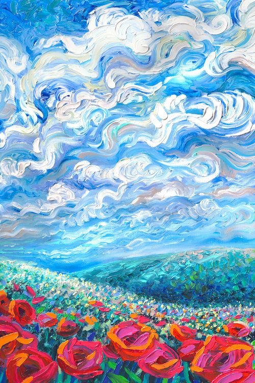
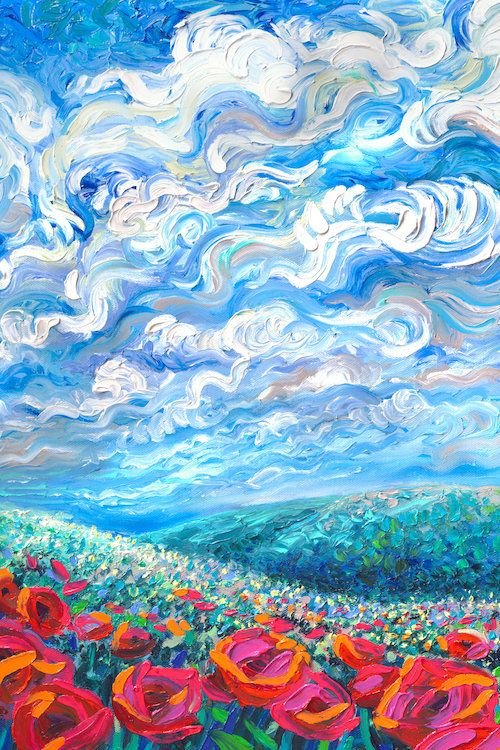
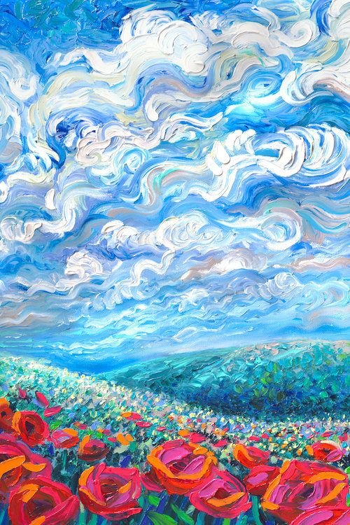
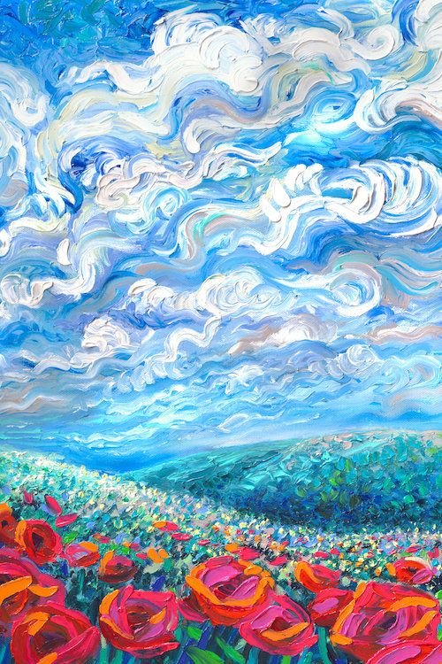

I´m Danny ღ on We Heart It_Imagen de book and rainbow.jpg)


 



![Goldfish [Canon AE1-P, Cinestill 800T]](images/atulvinayak/Sys3/407083253827918708_Goldfish [Canon AE1-P, Cinestill 800T].jpg)
… '.jpg)


 _ Twitter.png)


 _ Available for Sale _ Artsy.jpg)


 
